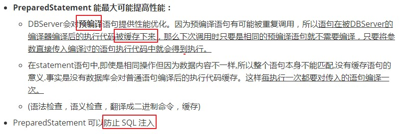

06-PreparedStatement实现高效的批量插入
测试使用PreparedStatement实现批量操作：
层次一：使用Statement实现
* Connection conn = JDBCUtils.getConnection();
* Statement st = conn.createStatement();
* for(int i = 1;i <= 20000;i++){
* String sql = "insert into goods(name)values('name_" + i + "')";
* st.execute(sql);
* }
层次二：使用PreparedStatement替换Statement
略。
层次三：
1.addBatch()、executeBatch()、clearBatch()
2.mysql服务器默认是关闭批处理的，我们需要通过一个参数，让mysql开启批处理的支持。?rewriteBatchedStatements=true 写在配置文件的url后面
3.使用更新的mysql 驱动：mysql-connector-java-5.1.37-bin.jar
层次四：设置连接不允许自动提交数据
最终版的代码体现：
@Test
public void testInsert3() {
Connection conn = null;
PreparedStatement ps = null;
try {
long start = System.currentTimeMillis();
conn = JDBCUtils.getConnection();
//设置不允许自动提交数据
conn.setAutoCommit(false);
String sql = "insert into goods(name)values(?)";
ps = conn.prepareStatement(sql);
for(int i = 1;i <= 1000000;i++){
ps.setObject(1, "name_" + i);
//1."攒"sql
ps.addBatch();
if(i % 500 == 0){
//2.执行batch
ps.executeBatch();
//3.清空batch
ps.clearBatch();
}
}
//提交数据
conn.commit();
long end = System.currentTimeMillis();
System.out.println("花费的时间为：" + (end - start)); //20000:83065 -- 565
} catch (Exception e) { //1000000:16086 -- 5114
e.printStackTrace();
}finally{
JDBCUtils.closeResource(conn, ps);
}
}
总结：PreparedStatement与Statement的异同？
① 指出二者的关系？ 接口 与 子接口的关系
② 开发中，PreparedStatement替换Statement
③ An object that represents a precompiled SQL statement.
